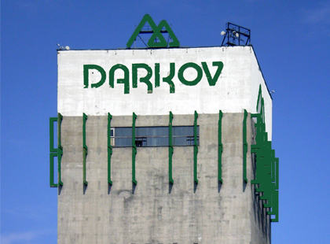
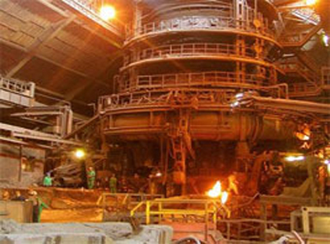
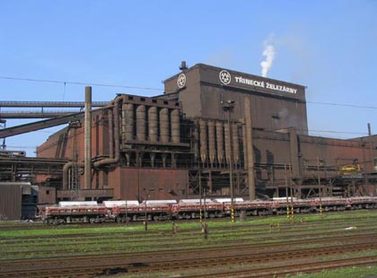
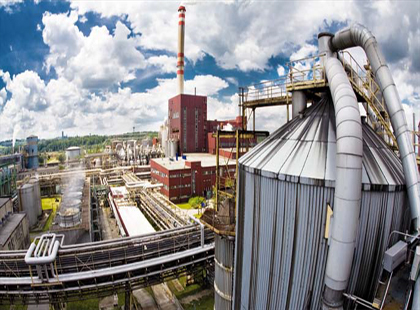
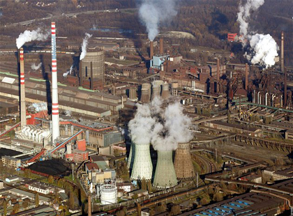
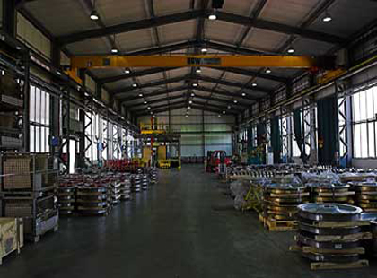
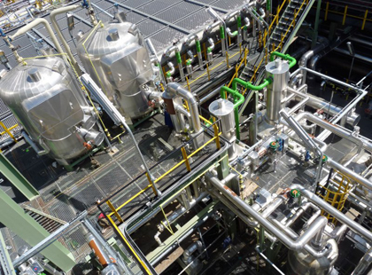
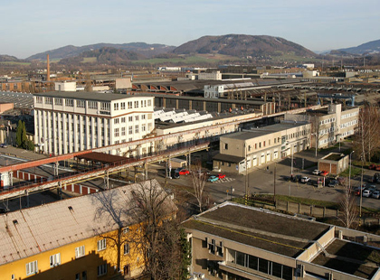

-

OKD Dúl Darkov
Místo stavby: Karviná
Dělali jsme nátěr loga DARKOV na skype.
-

US Steel Košice
Místo stavby: Košice
Dělali jsme generální opravu vysoké pece
-

Třinecké železárny
Místo stavby: Třinec
Stavěli jsme lešení k různým potrubím a zásobníkúm.
-

BIOCEL Paskov
Místo stavby: Paskov
Stavěli jsme lešení v regeneračním kotli, lešení k potrubím, fasádne lešení.
-

Arcellor Mittal
Místo stavby: Ostrava
Stavěli jsme lešení k prúmyslovým jeřábum, lešení k vzduchotechnice, dělali jsme opravárenské práce na turbíne.
-

ČEZ, a.s.
Místo stavby: Dětmarovice
Stavěli jsme lešení k vzduchovodom, lešení v hlubinném zásobníku a lešení ke kotli na GO.
-

Bonatrans Bohumín
Místo stavby: Bohumín
Stavěli jsme lešení k jeřábové dráze, rúzna lešení v halách a k potrubím.
-

BorsodChem
Místo stavby: Ostrava
Dělali jsme lšení na mostě A6 a A8.
-

Tatra Kopřivnice
Místo stavby: Kopřivnice
Dělali jsme vymalovaní správní budovy, opravu a pokládku dlažby na strojovně.
Seznam referencí
| Lešenářské práce GO vysoká pec – Košice | US Steel Košice |
| Lešenářské práce na potrubí D2000 | Třinecké železárny |
| Lešenářské práce v regeneračním kotli | BIOCEL Paskov |
| Lešenářské práce – mostový jeřáb | Arcellor Mittal Ostrava |
| Lešenářské práce – Demivoda Třinec, zásobníky | Třinecké železárny |
| Lešenářské práce – Vzduchovody | ČEZ, a.s. EDě |
| Stavba lešení v nádrži vodojemu – Petřvald u Mošnova | Petřvald |
| Stavba lešení v rámci GO TG4 | Dalkia – TKV |
| Stavba lešení v spalovací komoře K2 | Dalkia - TPV |
| Výstavba lešení vodné přechody v Pardubicích, Dvůr Králové | Pardubice, Dvůr Králové |
| Stavba lešení v zásobnících energetického uhlí | Důl ČSM sever |
| Montáž lešení primární chladič | Koksovna Svoboda |
| Stavba lešení na zásobníku č.5 u aglomerace č.1 | Třinecké železárny |
| Montáž lešení hlubinového zásobníku | ČEZ, a.s. EDě |
| Montáž závěsného lešení pod pásem 1478 | Důl Darkov |
| Montáž lešení k střešní konstrukci | Dalkia Frýdek-Místek |
| Montáž lešení v absorberu č.1 | ČEZ, a.s. EDě |
| Opravárenské a montážní práce na turbíně TD2 v Arcellormittal Ostrava | Arcelor Mittal Ostrava |
| Montáž lešení na GO kotle č.1 | ČEZ, a.s. EDě |
| Montáž lešení hala Obrobna č. 1,2,3,4 | Bohumín Bonatrans |
| Montáž lešení v jeřábové dráze | ŽDB Bohumín |
| Natěračské práce Obrobna 1,2,3,4 | Bohumín Bonatrans |
| Stavba lešení – výsypka surového uhlí | Důl Paskov |
| Čištění kotle K1, K2, K3, K4 | Dalkia – TPV |
| Lešenářské práce 2ks železn. mostu - Karviná | Třinecké železárny |
| Čištění zásobníků surového uhlí | Důl ČSM |
| Stavba lešení pod potrubí DN300 | Bonatrans Bohumín |
| Montáž lešení na mostě A6 a A8 | BorsodChem MCHZ |
| Nátěry el. skřinek a vrat | Sita Ostrava |
| Nátěry střech B, C, D | SOU Vsetín |
| Montáž lešení k elektroinstalaci | Ostrava – Třebovice, Dalkia a.s. |
| Montáž lešení v kalojemu 2ks | ČOV Vítkov |
| Montáž lešení k přírubám DN1000 | Koksovna Svoboda |
| Montáž lešení k vzduchotechnice | Arcelor Mittal Frýdek-Místek |
| Stavba lešení na akci: „Oprava a nátěr těžní věže jámy Pokrok“ | Areál Pokrok - Petřvald |
| Stavba lešení na akci: „Oprava těžní věže – Důl Michal“ | Důl Michal - Michalkovice |
| Zednické práce při opravě tlakového celku | Kopřivnice |
| Nátěry turbíny na strojovně | Stonava |
| Nátěr loga DARKOV na skype | OKD Důl Darkov |
| Demolice správní budovy objektu Petřvald | Bývalý důl Fučik I |
| Vymalování správní budovy | Tatra Kopřivnice |
| Oprava a pokládka dlažby na strojovně | Tatra Kopřivnice |